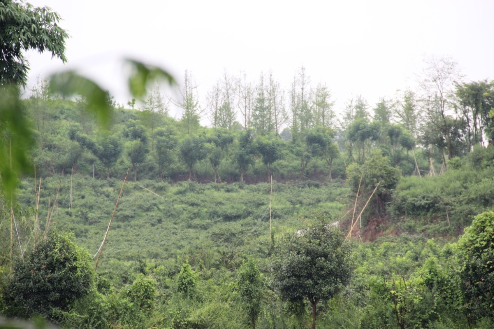
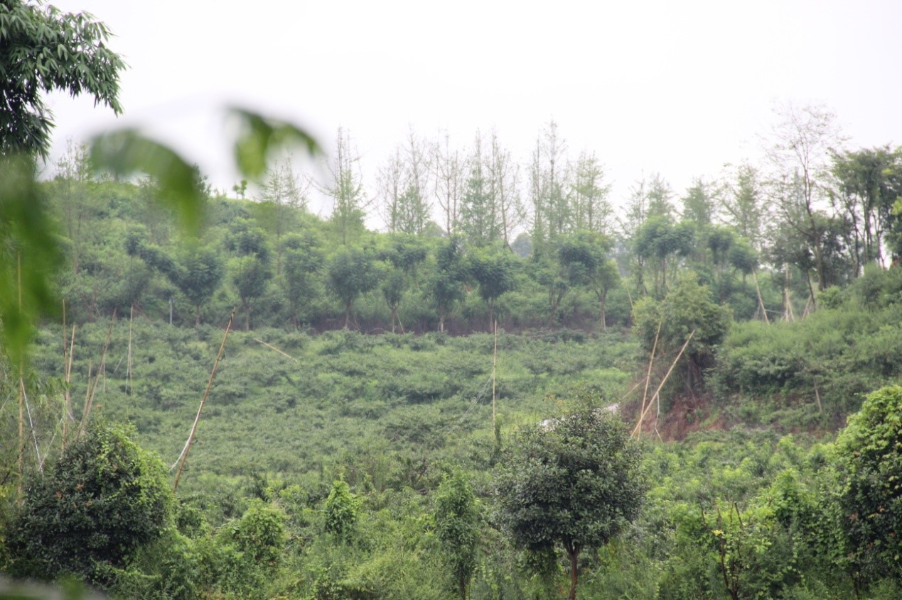
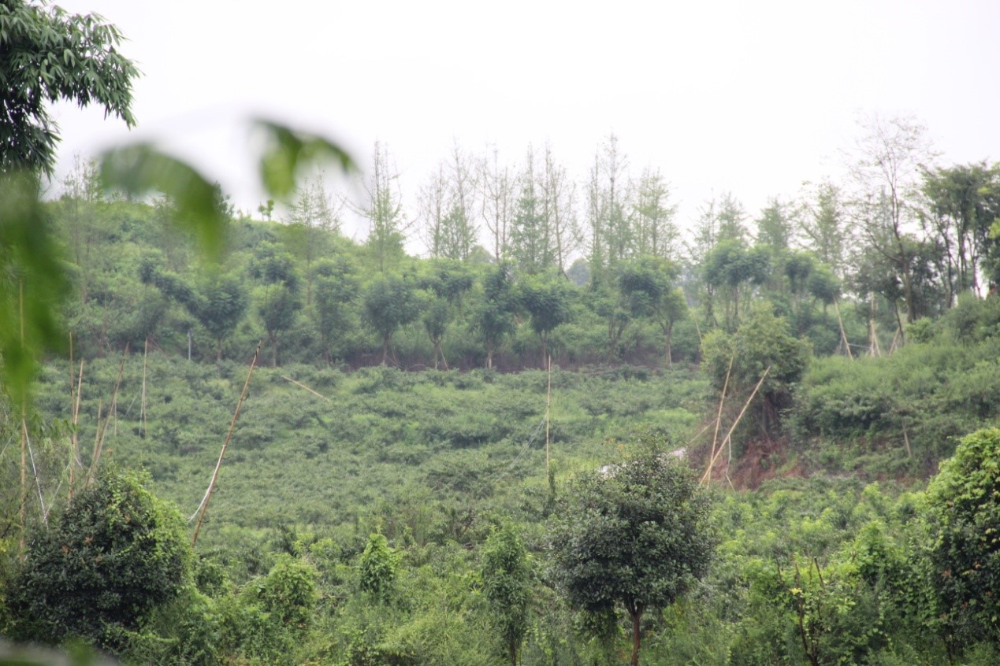
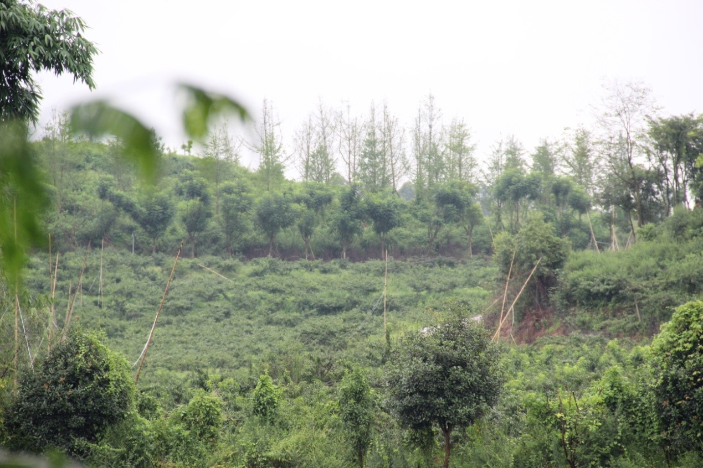

三溪镇小户居多，要搞大规模，标准化生产，鼓励果农以入股等等方式拿给大公司做，让果农做到不种树也能获得原来的收益。大方向都是标准化，加强技术，为了解决人力不足的问题。通过土地的扭转让大户来发展，基本都是五十亩到两三千亩不等，这个是一个更新，这个对于机械化/新技术推广都有很大的效应。智慧农民一般都是在大户去发展，逐家逐户去发展不太现实。（这个的阻碍是农户不穷，所以不太愿意并进合作社，加上并进大户标准化生产什么时候做什么弄的很严，人家不愿意觉得麻烦。加上六十岁以上的人念旧不愿意卖，等这一批人去世了，外面打工的四五十岁的人来商量就比较好推进）。 总的来说，三溪脐橙不愁销，主要问题在于价格上不去。现在大力发展品质是为 进一步提高价格。